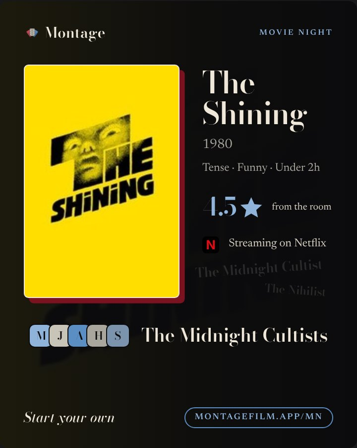

Six notes from the owner on v2, all applied. Pages a to e put every v2 card beside its v3; cards with a row of films show v3 both ways (plain row and subtle reel). Unchanged: red only as the accent, rounded-square initials, ratings as 4.5★, no QR, no room ids, no em dashes, never “taste match”, and the v2 word count on every card (counted live under each v3).
Note 1 · the oxblood offset
Shadow out, spine in
“Ugly”, especially where it is prominent. No shadow on the ticket.
- The offset shadow is gone as the default, on all 23 cards.
- Every card gets an oxblood spine: a solid #7a1220 band down the left edge, 18px on every format (Story, Post, preview), full height, no keyline. It is the card's one red, like a book's spine.
- Movie Night keeps a shadow (the owner liked its red), now half the size (8px, was 16) in a darker, muted oxblood, and no spine.
- Site and Browse: the offset under the pill is dropped; the spine is their red.
Note 2 · Film DNA on the profile card
The shape reads as a chart
“Looks a little bare, what the heck is that.” The stacked traits “don't look great”.
- The DNA gets faint rings and spokes and a soft blue fill, so it reads as a chart at a glance.
- Its three strongest strands are lit (a dot) and named at their points: Human drama, Slow burn, Visual craft.
- That replaces the tall stack of three traits: the same three words now label the chart, so no stack, no extra words. Maya's square sits beside it.
- Same on the Story version and the reveal card; the link preview gets rings and dots (too small for names).
Note 3 · ghosted archetype names
Only where the card is about taste
Only on cards about taste or an archetype.
- Kept on 9: the profile card (Post, Story, preview), the reveal, group taste (card and preview), the three year cards.
- Removed from 14: the film share card and film page preview, the pick ticket, Montage's read, Pitch, the movie night invite, the site and Browse previews, and also the Blend card, What's our Blend?, the group recap, the Canon and Movie Night.
- Why: on a single film card the names were unrelated noise. The Lovestruck, The Tenderhearted and The Old Soul drifting beside Past Lives say nothing about Past Lives or about Alex, and nobody on that card is any of them. Behind an archetype they are the point: the one you got, among the ones you didn't.
Note 4 · the reel
Plain row recommended
Not sure about the film strip under rows of films.
- Every card with a row of films (profile x3, Blend, Pitch, group taste x2, group recap x2, Canon, That was 2026) is shown both ways: a plain row with gaps, and a much subtler reel (no black band, two thin rows of faint sprocket holes at 13% cream).
- Recommendation: the plain row. The spine already says Montage on every card; a reel on top of it is a second signature competing with the posters. Plain posters with gaps are the app's own grid, read cleanly at chat size, and leave the posters as the hero. The subtle reel is the fallback if the owner wants a film nod back.
Note 5 · keep what he liked
Liked cards kept as they were
- Blend card: layout kept. Made fully legible: ghost names off from behind Sam and Maya, the poster wall fades to solid ink above the names, names up from 56 to 60px cream, 87% sits on solid ink, Films you both love in the brighter grey (was the muted one).
- Film share card: layout and the tilted 87% match stamp kept; spine for the offset; ghost names off.
- Montage's read, Movie Night result, Your closest Blend: layouts kept; only the red and the ghost names change, as above.
Note 6 · pick ticket
Option B, no shadow
Keep the cream ticket; no shadow, maybe the spine or the tear only.
- Option B kept, the cream paper ticket, now centred with even edges and no oxblood shadow; ghost names off the paper.
- Two versions: B1, tear line only (no red at all) and B2, with the spine on the card's edge.
- Recommended: B2. Every card then carries the same mark in the same place, so a pick in a chat is recognisably Montage.
Note 1
The offset becomes the spine
One band, same 18px on every format: the old year card's stripe, without the keyline. Ticket: no shadow at all.
v3 · spine

Montage
Past Lives
2023 · Celine Song
What's yours?
montagefilm.app
v2 · Movie Night, 16px offset

v3 · 8px, muted
Montage
Movie Night
Note 2
Film DNA, before and after
v2 was a bare diamond with a stack of three words beside it. v3 is recognisably a chart, and the three words label it.
v2
Human drama
Slow burn
Visual style
The nine strands are the app's: Human drama, Complexity, Slow burn, Originality, Visual craft, Intensity, Spectacle, Wonder, Comedy. Only the strongest three are named, so the card stays clean.
Note 3
Why the ghost names leave film cards
v2's film card, flagged: three archetype names next to a film they have nothing to do with.
unrelatedunrelatedunrelated
On the reveal they are the point: the one you got, among the ones you didn't.
Note 4
Under a row of films
The same three films three ways, at preview size.
v2 · the reel
v3 · subtle reel
v3 · plain row